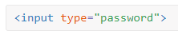
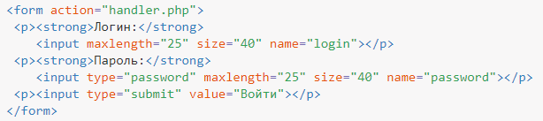
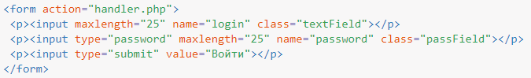
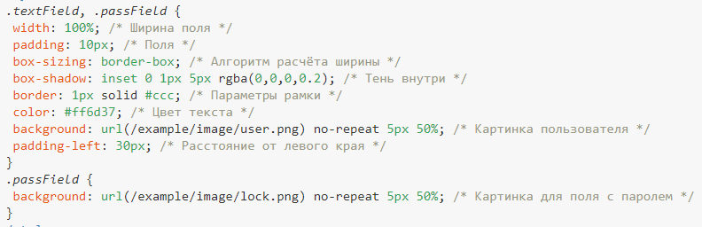

Поле для пароля
Поле для ввода пароля — обычное текстовое поле, вводимый текст в котором в зависимости от браузера отображается звёздочками или точками. Такая особенность предназначена для того, чтобы никто не подглядел вводимый пароль. Хотя вводимый текст и не показывается на экране, на сервер введённая информация передаётся в открытом виде без шифрования. Поэтому использование этого поля не обеспечивает безопасности данных и их можно перехватить.
Синтаксис создания следующий.

Атрибуты практически совпадают с атрибутами текстового поля и перечислены в табл. 1.
| Атрибут | Описание |
|---|---|
| name | Имя поля, предназначено для того, чтобы обработчик формы мог его идентифицировать. |
| disabled | Блокирует поле для ввода текста и не отправляет данные на сервер. |
| form | Идентификатор формы для связывания текстового поля с элементом <form>. |
| type | Для поля с паролем мы указываем значение password. |
| maxlength | Устанавливает максимальное число символов, которое может быть введено пользователем в текстовом поле. Когда это количество достигается при наборе, дальнейший ввод становится невозможным. Если данный атрибут опустить, то можно вводить длинный пароль. |
| readonly | Блокирует поле для ввода пароля. |
| size | Ширина текстового поля, которая определяется числом символов моноширинного шрифта. |
| value | Начальный пароль, который выводится в поле, но не отображается, как текст. |
| autocomplete | Введённый ранее пароль запоминается браузером и подставляется при следующем вводе. |
| autofocus | Поле получает фокус после загрузки документа. |
| pattern | Шаблон ввода пароля. |
| required | Указывает, что пароль является обязательным для заполнения. |
| placeholder | Добавляет подсказку, которая исчезает при вводе пароля. |
Поле для пароля нашло широкое применение на сайтах для авторизации пользователей и разграничения доступа к разделам сайта, где требуется подтвердить свои полномочия. В примере 1 показано, как создавать подобные поля.
Пример 1. Поле с паролем

Следует помнить, что хотя пароль в браузере и не виден, но на сервер по протоколу HTTP он передаётся незашифрованным и его можно перехватить. Также пароль, заранее заданный в атрибуте value, можно подсмотреть в исходном коде веб-страницы или с помощью специальных плагинов.
К полю с паролем применимы стилевые свойства, задающие параметры цвета, фона, рамки и др. В примере 2 показано добавление фоновых картинок к полям формы. За основу возьмём стиль, как для текстовых полей.
Пример 2. Добавление изображения в текстовое поле


Картинки добавляются в качестве фона, поэтому текст обязательно надо сдвинуть вправо через padding-left, в противном случае он будет выводиться поверх изображения.